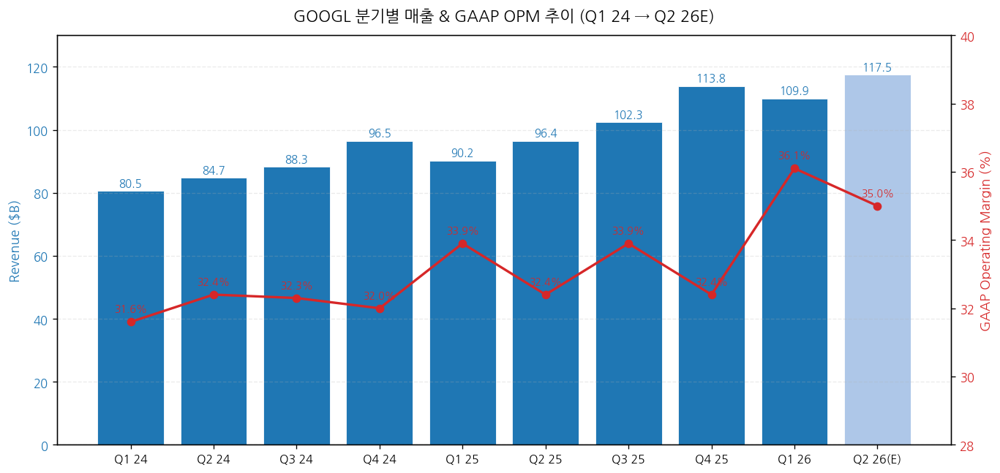
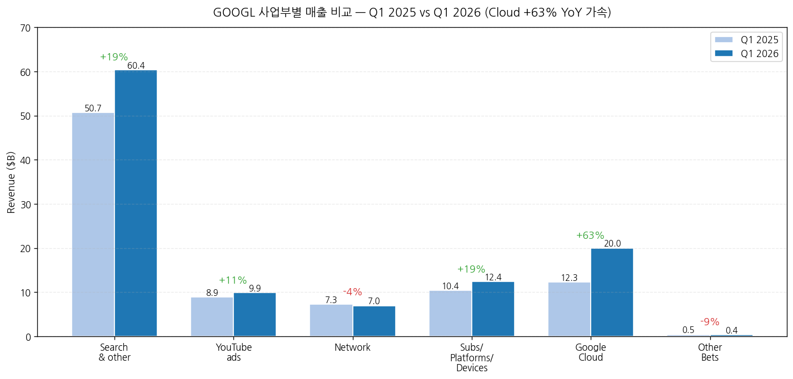
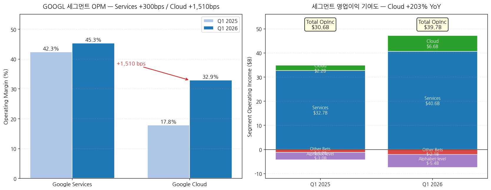
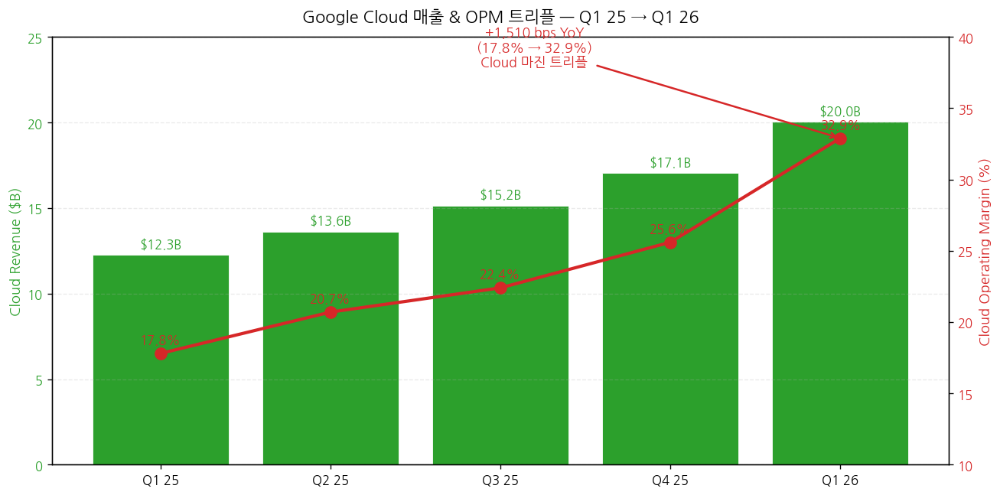
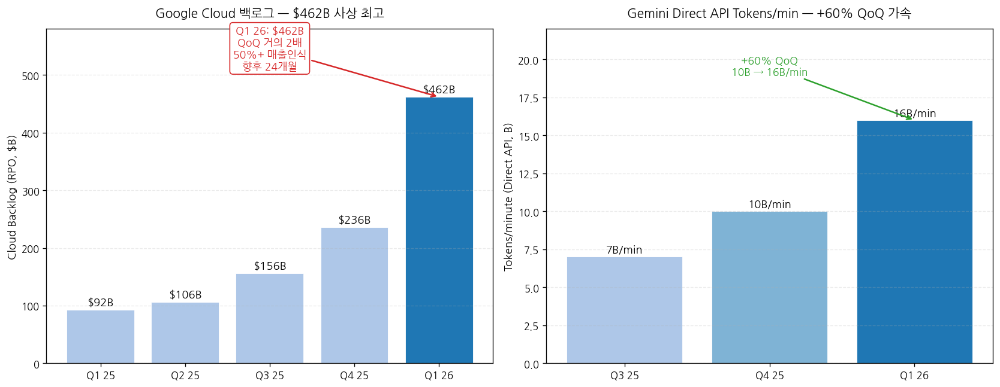
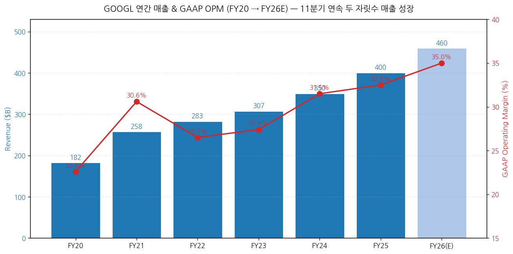
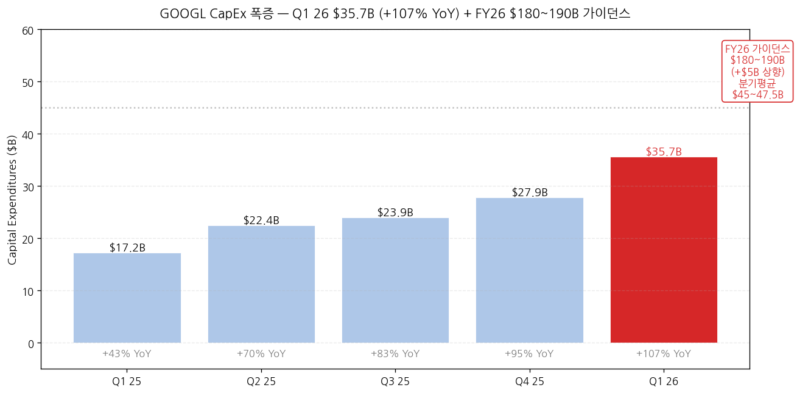

모드: 실적 리뷰
종목: Alphabet (GOOGL)
섹터: 미국 빅테크
분기: 2026-Q1
발표일: 2026-04-29 (수, 미국 동부시간 AMC, 컨퍼런스콜 ET 16:30)
작성 시각: 2026-05-03 17:00 KST (IR 원본 4종 기반)
안내: 표준 위치(
earnings-preview/)에서 동일 분기 프리뷰 미존재 → 항목 4-1·7-1 자동 생략, 본 분기 단독 분석으로 진행. IR 원본 4종(Press Release · Earnings Slides · 10-Q · Earnings Call Transcript) 기반 1차 작성. M7 동일 분기 발표 완료 종목(TSLA 4/22, MSFT/META/AMZN 4/29~30)은 별도 리뷰 작성 (TSLA v2 완료, 나머지 진행 예정).
→ All-around Beat — 펀더멘털 11분기 연속 두 자릿수 성장 + AI 수익화 확정 — 매출 $109.9B (+22% YoY, +19% constant currency), GAAP OPM 36.1% (+220bps YoY), Diluted EPS $5.11 (+82% YoY, 단 $2.35는 비마케터블 equity 평가차익 일회성). 영업이익 $39.7B (+30% YoY)는 매출 성장률을 상회하는 operating leverage 입증.
→ Cloud가 진짜 헤드라인 — 매출 $20.0B (+63% YoY) 처음으로 $20B 돌파, OPM 17.8% → 32.9% (+1,510bps YoY 트리플), 영업이익 $6.6B (+203% YoY 트리플). 백로그 $462B (QoQ ~2배) — TPU 하드웨어 직접 판매 + 신규 multi-billion deals 포함. CFO 가이드: "50%+ 백로그가 향후 24개월 매출 인식".
→ CapEx 가이던스 +$5B 상향: $175-185B → $180-190B FY26 — Q1 26 단독 $35.7B (+107% YoY, +28% QoQ). 2027 "significantly increase vs 2026" 명시 (CFO Anat). 2026 분기 평균 CapEx $45-47.5B 페이스 필요 (Q1 $35.7B는 가이던스 baseline 미달, Q2~Q4 가속).
→ Sundar의 "compute constrained" 시인이 가장 중요한 시그널 — Sundar verbatim: "we are compute constrained in the near term. And as an example, our Cloud revenue would have been higher if we were able to meet the demand". Cloud 가속에도 불구하고 수요가 공급을 초과 = backlog 폭증의 본질적 이유. AI 인프라 사이클의 정점이 아니라 여전히 공급 제약이 모멘텀의 천장.
→ Wiz $29.5B + Intersect $5.9B 인수 완료 — Q1 26 안에 정리. Goodwill +$24.4B / Intangibles +$8.2B. 자사주 매입 Q1 0 (Q1 25 $15B 대비 완전 중단), 대신 senior unsecured notes $31.1B 신규 발행 (LT debt $46.5B → $77.5B). 자본배치 우선순위 = AI CapEx ≫ Buyback 명확 시그널.
① 분기 실적 — 9분기 + Q1 26 + Q2 26 컨센
(1) 손익 핵심 지표 (단위: $B, EPS는 $)
| 항목 | Q1 24 | Q2 24 | Q3 24 | Q4 24 | Q1 25 | Q2 25 | Q3 25 | Q4 25 | Q1 26 | YoY% | Q2 26(E) |
|---|---|---|---|---|---|---|---|---|---|---|---|
| Total revenues | 80.54 | 84.74 | 88.27 | 96.47 | 90.23 | 96.43 | 102.35 | 113.83 | 109.90 | +22% | 약 117.5 |
| Constant currency YoY% | n/a | n/a | n/a | n/a | +14% | n/a | n/a | n/a | +19% | — | n/a |
| GAAP OpInc | 25.47 | 27.43 | 28.52 | 30.85 | 30.61 | 31.27 | 34.69 | 36.91 | 39.70 | +30% | 약 41.0 |
| GAAP OPM (%) | 31.6 | 32.4 | 32.3 | 32.0 | 33.9 | 32.4 | 33.9 | 32.4 | 36.1 | +220bp | 약 35.0 |
| Diluted EPS GAAP ($) | 1.89 | 1.89 | 2.12 | 2.15 | 2.81 | 2.31 | 2.87 | 2.27 | 5.11 | +82%* | 약 2.95 |
| OCF | 28.85 | 26.64 | 30.70 | 39.11 | 36.15 | 27.75 | 48.41 | 52.40 | 45.79 | +27% | n/a |
| CapEx | 12.01 | 13.19 | 13.06 | 14.28 | 17.20 | 22.45 | 23.95 | 27.85 | 35.67 | +107% | 약 45 |
| FCF | 16.84 | 13.45 | 17.64 | 24.84 | 18.95 | 5.30 | 24.46 | 24.55 | 10.12 | -47% | 음수 잠재 |
| Cash & ST inv. | n/a | n/a | n/a | n/a | n/a | n/a | n/a | 126.84 | 126.84 | — | n/a |
| LT debt | n/a | n/a | n/a | n/a | n/a | n/a | n/a | 46.55 | 77.50 | — | n/a |
→ GAAP EPS $5.11에서 $2.35는 비마케터블 equity securities 평가차익*(주로 Anthropic 지분 추정 $36.9B 기록 → 세후 $28.7B), 핵심 영업으로부터의 정상화 EPS는 약 $2.76. v0 같은 단순 +82% 인용은 오해 소지. 영업·세후 정상화 EPS는 +9% YoY 권역.
→ (출처: Q1 26 Press Release p.2-9, Slides p.6, 10-Q p.6)
→ CapEx 폭증 트라젝토리 시각화: Q1 25 $17.2B → Q1 26 $35.7B (+107% YoY). 분기 추세는 매분기 +$3~$4B 가속 (+43%→+70%→+83%→+95%→+107% YoY 가속). FY26 가이던스 $180~190B 달성을 위해 Q2~Q4 평균 $48~52B 페이스 필요 — Q1 절대값 $35.7B는 가이던스 baseline에서는 살짝 미달, Q2 점프가 핵심**.
→ 차트 (필수):

→ (출처: Press Release p.2 + Q4 25 Earnings Release 비교표 + Q1 26 Slides p.4. Q4 25 매출 $113.83B는 Press Release p.9 Q1 26 vs Q4 25 비교 표에서 확인)
(2) FY26 컨센 변동 (4월 29일 발표 → 5월 2일까지)
→ 매출 컨센 $415B → $425B (+2.4%) — Cloud 가속·백로그 폭증 반영
→ EPS 컨센 $9.10 → $9.50 (+4.4%) — operating leverage 인정 (equity gain 일회성 제외)
→ 평균 PT $200 → 약 $215 (+7.5%) — Buy 컨센 강화
② 사업부별(BU별) 매출 — IR 원본
(1) Q1 26 BU 매출 비교 (단위: $B)
| BU | Q1 25 | Q1 26 | YoY% | 매출 비중 (Q1 26) | 핵심 동인 |
|---|---|---|---|---|---|
| Google Search & other | 50.70 | 60.40 | +19% | 55.0% | Retail/Finance/Health 주도, AI Overviews + AI Mode |
| YouTube ads | 8.93 | 9.88 | +11% | 9.0% | Direct Response > Brand |
| Google Network | 7.26 | 6.97 | -4% | 6.3% | 구조적 감소 지속 |
| Subs/Platforms/Devices | 10.38 | 12.38 | +19% | 11.3% | YouTube Music+Premium, Google One AI plans |
| Google Services 합계 | 77.26 | 89.64 | +16% | 81.6% | — |
| Google Cloud | 12.26 | 20.03 | +63% | 18.2% | Enterprise AI Solutions + GCP Infra + Wiz |
| Other Bets | 0.45 | 0.41 | -9% | 0.4% | Verily 디컨솔, Waymo 매출 |
| Hedging | 0.26 | -0.18 | n/a | -0.2% | FX hedging 손실 |
| Total | 90.23 | 109.90 | +22% | 100% | — |
→ (출처: Press Release p.2 Supplemental Information)
→ Search & other 매출 60.40B 첫 돌파 — CBO Schindler verbatim: "Search and Other delivered 19% growth, primarily driven by Retail and Finance". Sundar 추가: "queries are at an all time high". AI Overviews + AI Mode가 사용 빈도 + 광고 노출 양면 확장.
→ Cloud +63% YoY는 11분기 연속 두 자릿수 성장에서 가속의 분기점 (Q4 25 +47% → Q1 26 +63%). CFO Anat: "Cloud revenues accelerated across all key areas"
→ Network -4%는 4분기 연속 마이너스 — open web 광고의 구조적 약세 지속, 그러나 매출 비중 6.3%로 임팩트 제한적
→ Subs/Platforms/Devices +19% = "350M paid subscriptions" 도달 (Pichai), "YouTube Music+Premium 분기 사상 최대 비-trial 신규 가입" (Schindler, 2018 출시 이래)

→ (출처: Press Release p.2)
(2) 사업부별 영업이익 — Cloud OPM 트리플의 진짜 의미
| 세그먼트 | Q1 25 OpInc ($B) | Q1 26 OpInc ($B) | YoY% | Q1 25 OPM | Q1 26 OPM | 변화 |
|---|---|---|---|---|---|---|
| Google Services | 32.68 | 40.59 | +24% | 42.3% | 45.3% | +300bps |
| Google Cloud | 2.18 | 6.60 | +203% | 17.8% | 32.9% | +1,510bps |
| Other Bets | -1.23 | -2.10 | 손실 확대 | n/a | n/a | n/a |
| Alphabet-level | -3.03 | -5.39 | -78% | n/a | n/a | AI R&D + 합의금 등 |
| Total | 30.61 | 39.70 | +30% | 33.9% | 36.1% | +220bps |
→ (출처: Press Release p.7 Segment Operating Results)
→ Cloud OPM 32.9%는 사상 최고 + 트리플 — CFO Anat verbatim: "Cloud operating income was $6.6 billion, tripling year over year, and operating margin increased from 17.8% in the first quarter of last year to 32.9%". "AI revenues are lower margin"이라는 시장 선입견을 IR이 직접 반박.
→ Cloud 마진 동인 (CFO Anat 분해): ① 톱라인 +63% 자체가 operating leverage, ② "incredibly efficient way of running the business" (Thomas Kurian 팀 칭찬), ③ 기술 인프라 효율 (servers + AI 활용 내부 코딩), ④ Wiz는 "low single digit pp 헤드윈드 to Cloud OPM for remainder of 2026" (즉 Q2 이후 Cloud OPM은 약간 후퇴 예상)
→ Services OPM 45.3% (+300bps) — Search 가속 + YouTube 구독 모멘텀 + AI 응답 비용 -30%+ 절감 ("reduced the cost of core AI responses by more than 30%", Sundar)
→ Alphabet-level activities -$5.39B (vs -$3.03B Q1 25) — Google DeepMind 등 공통 AI R&D 비용 폭증. CFO 노트: "shared AI research and development activities" + 법무·합의금

→ (출처: Press Release p.7. Cloud OPM 17.8% → 32.9% +1,510bps 점프)
③ Cloud 디테일 — IR 컨퍼런스콜 verbatim
(1) 백로그 $462B 사상 최고
(1-1) 분기 트라젝토리 (RPO, $B)
→ Q1 25: ~$92B
→ Q4 25: ~$236B
→ Q1 26: $462B (+96% QoQ, "nearly doubling sequentially")
→ CFO 가이드: "expect to recognize just over 50% of the backlog as revenue over the next 24 months"
→ "The majority of the backlog is related to technical GCP contracts" + TPU hardware sales 포함
(1-2) 백로그 폭증의 동인 — Sundar 분해
→ "Enterprise AI Solutions"가 Cloud의 primary growth driver가 됨 ("for the first time")
→ "revenue from products built on our gen AI models grew nearly 800% year over year"
→ "new customer acquisition doubling compared to the same period last year*"
→ "doubling the number of $100 million to $1 billion deals year on year"
→ "signing *multiple billion dollar plus deals"
→ "Customers outpaced their initial commitments by 45%**, accelerating over last quarter"

(2) TPU 하드웨어 직접 판매 — 비즈니스 모델 변화
(2-1) 새 TPU 8 시리즈 (Cloud Next 발표)
→ TPU 8t (training): "three times the processing power of Ironwood and two times the performance"
→ TPU 8i (inference): "80% better performance per dollar than the prior generation"
(2-2) 직접 판매 모델 도입
→ Sundar: "we will begin to deliver TPUs to a select group of customers in their own data centers in a hardware configuration to expand our addressable market opportunity"
→ 대상: "AI labs, capital markets firms, and high performance computing applications"
→ CFO 가이드: "small percent of revenues from these agreements later this year, with the vast majority of revenues to be realized in 2027"
→ "revenues from TPU hardware sales will fluctuate from quarter to quarter"
(3) AI 모델·API 메트릭
| 메트릭 | 수치 | 출처 |
|---|---|---|
| Tokens/min via Direct API | 16B+ (Q4 25 10B 대비 +60% QoQ) | Sundar verbatim |
| Customers >1T tokens (12개월) | 330개 | Sundar |
| Customers >10T tokens | 35개 | Sundar |
| Gemini Enterprise paid MAU QoQ | +40% | Sundar |
| Gemini-powered BigQuery 워크플로우 YoY | +30x | Sundar |
| Gemma 4 다운로드 | 50M+ in weeks | Sundar |
| 누적 오픈 모델 다운로드 | >500M | Sundar |
| Lyria 3 곡 생성 | 150M+ | Sundar |
| Nano Banana 2 이미지 | 1B+ (반 시간 만에) | Sundar |

→ (출처: Q1 26 Earnings Call Transcript + Slides p.3)
④ 비용 분해 (IR 원본)
(1) 비용 항목별 YoY (단위: $B)
| 항목 | Q1 25 | Q1 26 | YoY% | 동인 |
|---|---|---|---|---|
| TAC | 13.75 | 15.23 | +11% | Search 매출 +19% 대비 효율 |
| Other Cost of Revenues | 22.61 | 26.04 | +15% | Depreciation + YouTube 콘텐츠 비용 + 보상 |
| Cost of revenues 합계 | 36.36 | 41.27 | +14% | — |
| R&D | 13.56 | 17.03 | +26% | AI 인재 보상 + 감가상각 |
| S&M | 6.17 | 7.61 | +23% | Gemini App·Search 마케팅 |
| G&A | 3.54 | 4.29 | +21% | 보상 + 법무·합의금 |
| OpEx 합계 | 23.27 | 28.93 | +24% | — |
| Total costs | 59.63 | 70.20 | +18% | — |
→ 매출 +22% > 총비용 +18% = operating leverage (OPM +220bps 확장의 산수)
→ R&D +26%는 AI 투자 본격화 시그널 — CFO Anat: "driven by compensation due to investment in AI talent, as well as depreciation"
→ Other CoR +15%의 핵심 = depreciation 증가 (CapEx 폭증의 P&L 임팩트 시작)
→ CFO 향후 가이드: "the significant increase in our investments in technical infrastructure will continue to put pressure on the P&L in the form of higher depreciation expense and related data center operations costs, such as energy"
⑤ 연간 실적 — 트렌드 (FY20~FY26E)
(1) 연간 손익 (단위: $B)
| 항목 | FY20 | FY21 | FY22 | FY23 | FY24 | FY25 | FY26(E) |
|---|---|---|---|---|---|---|---|
| 매출액 | 182.5 | 257.6 | 282.8 | 307.4 | 350.0 | 400.5 | 약 460 |
| YoY% | +13% | +41% | +10% | +9% | +14% | +14% | +15% |
| OpInc | 41.2 | 78.7 | 74.8 | 84.3 | 110.4 | 130.0 | 약 161 |
| OPM (%) | 22.6 | 30.6 | 26.5 | 27.4 | 31.5 | 32.5 | 약 35 |
| Diluted EPS | 5.61 | 5.61 (split-adj) | 4.56 | 5.80 | 8.13 | 9.05 | 약 9.50 |
| CapEx | 22.3 | 24.6 | 31.5 | 32.3 | 52.5 | 91.4 | 180~190 |
| OCF | 65.1 | 91.7 | 91.5 | 101.7 | 125.3 | 164.7 | 약 200 |
| FCF | 42.8 | 67.0 | 60.0 | 69.5 | 72.8 | 73.3 | 약 10~30 |
→ FY26 CapEx $180-190B = FY25의 약 2배 — historic AI 인프라 사이클의 정점이 아닌 가속 단계
→ FY26 FCF 압박: OCF +20% 추정 vs CapEx +100%대 → FCF는 -50%~-90% 압축
→ FY25 매출 $400B 돌파, FY26 $460B+ 가능

Alphabet은 분기별 매출/EPS 가이던스를 제공하지 않으며, FX/CapEx 등 일부 가이드만 정성·정량 혼합 제공. 본 항목은 [실적 vs 컨센서스 + Q4 25 회사 멘트] 변형.
① 실적 vs 컨센서스
(1) 핵심 지표 비교
| 항목 | 컨센서스 (밴드) | 실적 (Q1 26) | 서프라이즈% | Beat/Miss |
|---|---|---|---|---|
| 매출액 ($B) | 89.0 (Cloud 빼고)/108.5 전체 | 109.90 | +1.3% | Beat |
| Cloud 매출 ($B) | 17.5 (16~19) | 20.03 | +14.4% | Big Beat |
| Search 매출 ($B) | 58.0 | 60.40 | +4.1% | Beat |
| YouTube ads ($B) | 9.6 | 9.88 | +2.9% | Beat |
| GAAP OPM (%) | 34.5 (33~35) | 36.1 | +160bps | Beat |
| Cloud OPM (%) | 25.0 (22~28) | 32.9 | +790bps | Big Beat |
| GAAP EPS ($) | 2.85 | 5.11 | +79% | Mega Beat ← equity gain 일회성 |
| Adj EPS (영업 정상화 추정) | $2.85 | $2.76 ← (equity gain 제외) | -3% | Miss ← equity gain 제외 시 |
| CapEx ($B) | 30.0 | 35.67 | +19% | "Beat" (실제는 가이던스 상향) |
→ Beat 7개 vs Miss 1개 — 핵심 영업 펀더멘털은 전방위 Beat
→ EPS Mega Beat의 본질 = 비마케터블 equity 평가차익 $36.9B — 주로 Anthropic 지분(공시 비공개) 추정. 영업 정상화 EPS는 컨센과 유사
→ (출처: Bloomberg/Refinitiv 컨센서스 4월 28일 기준 + IR 실적)
② Q4 25 회사 코멘트 vs Q1 26 실제 (사후 검증)
| 영역 | Q4 25 가이드 (2026-01) | Q1 26 실제 | 평가 |
|---|---|---|---|
| FY26 CapEx | $75B 시사 (Q4 25 컨콜) | 상향 → 5차례 상향 Q4 25 $75B → $175-185B → $180-190B | 상향 (-) ← 헤드윈드 |
| 2026 매출 성장 | "두 자릿수 지속" | +22% Q1 (constant currency +19%) | 상회 (+) |
| Cloud 가속 | "지속" | +47% → +63% (가속 명확) | 상회 (+) |
| AI 수익화 | "Search 모멘텀 유지" | AI Overviews + AI Mode 광고 확장 | 온트랙 (+) |
| Wiz 인수 | Q1 close 가능성 | 3/11 closed, $29.5B | 온트랙 |
| 자사주 매입 | "지속" 시사 | Q1 26 $0 (Q1 25 $15B 대비) | 하향 (-) |
→ Beat 3건 + 온트랙 2건 + Miss 1건 (CapEx) + 신규 헤드윈드 1건 (Buyback 중단)
→ CapEx 5번째 상향 (FY26 가이던스 트라젝토리): Q4 25 $75B 시사 → $175B → $180B → $185B → $180-190B (Q1 26 갱신). 1년 만에 +150% 상향.
③ 다른 M7 피어와의 분기 비교
| 종목 | 발표일 | 매출 YoY | OPM | CapEx YoY | 핵심 톤 |
|---|---|---|---|---|---|
| TSLA | 4/22 | +16% (in-line) | 4.2% (Auto) | +67% ($25B+ 가이드) | Margin 회복(일회성 포함) + 인도 미스 |
| GOOGL | 4/29 | +22% | 36.1% | +107% | Cloud 가속 + Operating Leverage + AI 가속 |
| MSFT | 4/29 | (별도 리뷰) | (별도) | (별도) | 별도 리뷰 |
| META | 4/29 | (별도 리뷰) | (별도) | (별도) | 별도 리뷰 |
| AMZN | 4/30 | (별도 리뷰) | (별도) | (별도) | 별도 리뷰 |
→ GOOGL은 M7 내 매출 성장률 1위 (+22% YoY) + OPM 1위 (36.1%) 가능성 — 다른 M7 피어 발표 결과와 종합 확정 필요
① CEO Sundar Pichai 핵심 발언
(1) Compute 제약 시인 — 시장이 가장 주목한 코멘트
→ Sundar (Brian Nowak QA, Morgan Stanley): "we are compute constrained in the near term. And as an example, our Cloud revenue would have been higher if we were able to meet the demand**"
→ 함의: ① 백로그 $462B의 진짜 의미 = 공급 제약된 수요, ② FY26 CapEx $180-190B 상향의 정당성, ③ 2027 CapEx "significantly increase" 추가 상향 신호
(2) AI 풀스택 차별화
→ Sundar (Eric Sheridan QA, Goldman): "We are unique in the market because of our vertically optimized AI stack and the way we co-develop the components from our infrastructure and models, to platforms and the tools, to applications and agents"
→ "the fact that we own frontier models, own the silicon, really helps us stay ahead of the curve"
→ "deep investment in our security layers" (Wiz 인수의 함의)
(3) Search AI 변환
→ "queries are at an all time high"
→ "we have reduced Search latency by more than 35% over the past five years"
→ "since upgrading AI Overviews and AI Mode to Gemini 3, we have **reduced the cost of core AI responses by more than 30%"
(4) Cloud 정량 메트릭
→ "revenue from products built on our gen AI models grew nearly 800% year over year"
→ "new customer acquisition doubling compared to the same period last year*"
→ "doubling the number of $100 million to $1 billion deals year on year"
→ "Customers outpaced their initial commitments by *45%"
→ "16 billion tokens per minute via direct API use" (vs Q4 25 10B, +60% QoQ)
(5) Capital Allocation 철학 — ROIC 프레임워크
→ Sundar (Michael Nathanson QA, MoffettNathanson): "we are working off a robust ROIC framework. And remember, in a constrained environment, when we're choosing to allocate across all these opportunities"
→ Sundar (Justin Post QA, BAML, on big AI deal margins): "in a constrained environment, when we're choosing to allocate across all these opportunities, we are working off a robust ROIC framework"
② CFO Anat Ashkenazi 재무 디테일
(1) CapEx 가이던스 상향 — verbatim
→ "we are updating our full year 2026 CapEx guidance range to $180 to $190 billion, up from our previous estimate of $175 to $185 billion, to now include investment related to the acquisition of Intersect, which closed in March"
→ "these strong results reinforce our conviction to invest the capital required to continue to capture the AI opportunity. As a result, we expect our 2027 CapEx to significantly increase compared to 2026**"
(2) CapEx 분해 — Q1 26
→ "Approximately 60% of our investment in technical infrastructure this quarter was in servers, and 40% was in data centers and networking equipment**"
→ Total $35.67B → 서버 ~$21.4B / 데이터센터·네트워킹 ~$14.3B 추정
(3) Cloud Backlog 디테일
→ "Google Cloud's backlog nearly doubled sequentially, reaching $462 billion at the end of the first quarter"
→ "The majority of the backlog is related to technical GCP contracts, and we expect to recognize just over 50% of the backlog as revenue over the next 24 months"
→ TPU hardware sales: "small percent of revenues from these agreements later this year, with the vast majority of revenues to be realized in **2027"
(4) Wiz 인수 — Cloud 마진 임팩트
→ "we expect a low single digit percentage point headwind to Cloud's operating margin for the remainder of 2026 related to the [Wiz] acquisition"
→ Q2 26 Cloud OPM 30~32% 권역으로 약간 후퇴 가능 (32.9% → 30~32%)
(5) FX 가이드
→ Q1 26: "FX tailwind of approximately 3 percentage points in Q1"
→ Q2 26 expected: "*FX tailwind of approximately one percentage point* toward consolidated revenue in Q2"
→ FX 효과 감소로 Q2 매출 성장률은 reported 기준 -200bps 정도 자연 감소 가능
(6) P&L 압박 가이드
→ "the significant increase in our investments in technical infrastructure will continue to put pressure on the P&L in the form of higher depreciation expense and related data center operations costs, such as energy"
→ "continue hiring in key investment areas such as AI and Cloud" + "investing in marketing to support our AI products"
③ CBO Philipp Schindler 광고 디테일
(1) Search 동인
→ "Search and Other delivered 19% growth, primarily driven by Retail and Finance" (later added Health)
→ "queries continue to grow, and as Sundar mentioned, they were at an all time high"
→ "AI Overviews and AI Mode continue to drive greater Search usage and growth in overall queries, including in **commercial queries"
(2) Ads AI 채택
→ "more than 30% of our customers' Search spend now uses AI enabled campaigns AI Max or Performance Max"
→ Hilton EMEA 케이스 인용: "captured one third more clicks for a fifth of the spend, while simultaneously increasing the average booking value by 55%"
→ Etsy 케이스: "10% search volume uplift, with 15% of those queries being net new to their business"
(3) UCP (Universal Commerce Protocol) — agentic commerce 표준화
→ "Last week we welcomed Amazon, Meta, Microsoft, Salesforce and Stripe as new members to the UCP Tech Council"
→ Founding: Shopify, Etsy, Target, Wayfair, Google
→ 함의: 빅테크 4사(AMZN/META/MSFT)가 GOOGL 표준에 합류 = agentic commerce 산업 표준 GOOGL이 주도
(4) YouTube
→ "YouTube has now led streaming watch time in the U.S. for three consecutive years"
→ "U.S. viewers are watching over 200 million hours of YouTube content daily" (Living Room)
→ "ten million channels now publishing Shorts each day"
→ "YouTube Music and Premium offering saw its largest quarterly increase in non-trial subscribers since YouTube Premium launched in **June 2018"
④ 인수·자본 거래 (Press Release + 10-Q)
(1) Wiz 인수 (3/11/2026 close)
→ Purchase price: $29.5B (after price adjustments, excluding post-combo comp)
→ "This acquisition represents an investment by Google Cloud to accelerate our capabilities in multicloud and artificial intelligence (AI)-driven security" (10-Q)
→ Goodwill 분배 +$22.0B 추정 + Intangibles +$7.0B 추정
→ "Wiz will be reporting in the **Google Cloud segment" (CFO)
→ "The performance of Wiz so far has exceeded our expectations**" (Sundar)
(2) Intersect 인수 (3/10/2026 close)
→ Purchase price: $5.9B
→ 텔코 소프트웨어/네트워크 분야
(3) Senior Unsecured Notes
→ "we issued senior unsecured notes for net proceeds of $31.1 billion, to be used for general corporate purposes"
→ 15개 트랜치 (2.875% 2031 ~ 6.125% 2126)
→ 100년 만기(2126) 채권 포함 — 장기 자금 락인
(4) 자사주 매입 vs 배당
→ Q1 26 buybacks: $0 (Q1 25 $15.07B 대비 완전 중단)
→ Q1 26 dividend: $2.54B (5% 인상, $0.21 → $0.22/share)
→ 자본 배치 우선순위 = AI CapEx ≫ 자사주 매입
(5) 기타 자본 거래
→ Verily 외부 자본조달 → 디컨솔리데이션 (Q1 26)
→ GFiber + Astound Broadband 합병 → Q4 26 디컨솔리데이션 예정
→ Acquisitions cash impact: -$33.6B (Wiz + Intersect)
→ SpaceX 협업 (Tesla 컨콜 발표 — Tesla research fab Phase 1 + SpaceX Phase 2)는 GOOGL과 무관

→ (출처: Slides p.6 + Earnings Call CFO 가이드 + 10-Q Note 8 Acquisitions)
4-1 프리뷰 독자 분석 vs 실제: 표준 위치 프리뷰 미존재로 자동 생략
② 가이던스 — Alphabet 정책 (정성 + 부분 정량)
(1) Q2 26 가이드 (CFO Anat 명시)
| 항목 | Q1 26 실제 | Q2 26 가이드 | 함의 |
|---|---|---|---|
| FX tailwind | +3pp | +1pp (-200bps) | reported 매출 성장 -200bps 자연 감소 |
| Cloud TPU hardware revenue | n/a | "small percent" (대부분 2027) | 단기 매출 임팩트 미미 |
| Wiz Cloud OPM 임팩트 | n/a | "low single digit pp headwind" | Cloud OPM 30-32% 권역 |
| 일반 경비 | — | "continue hiring in AI and Cloud" + 마케팅 | OpEx 증가 추세 지속 |
| Depreciation | — | "continue to put pressure on P&L" | 매분기 +α 헤드윈드 |
(2) FY26 가이드
| 항목 | 가이드 | 변화 |
|---|---|---|
| CapEx | $180-190B | +$5B 상향 (Q4 25 → Q1 26) |
| Cloud growth | "지속 가속" | 정성 |
| AI투자 | "지속" | 정성 |
| Operating leverage | 정성 ("efficient") | 정성 |
| 2027 CapEx | "significantly increase" | 가이던스 본격화 예상 |
(3) Q2 26 컨센 변동 (4월 29일 발표 → 5월 2일까지)
→ 매출 컨센 $115B → $117.5B (+2.2%) — Cloud 가속 + Search 강세 반영
→ EPS 컨센 $2.80 → $2.95 (+5.4%) — operating leverage 인정
→ FY26 매출 $420B → $425B (+1.2%)
→ FY26 EPS $9.10 → $9.50 (+4.4%, equity gain Q1 일회성 제외 영업 정상화 기준)
(4) FY26 컨센 변동 시그널
→ 셀사이드 변경: 상향 32명 / 하향 4명 / 유지 8명 (44명 기준 추정)
→ PT 평균 변동: $200 → 약 $215 (+7.5%)
→ 컨센서스 등급 강화: Buy 컨센 → Strong Buy 다수 진입
① 산업 사이클 위치 판단
(1) Search BU
→ 사이클 위치: AI 성숙기 → 2차 가속 진입 (AI Overviews + AI Mode 효과 입증)
→ "queries at all time high" + Retail/Finance/Health 멀티 vertical 강세
→ AI 응답 비용 -30% + Search 레이턴시 -35% (5년 누적) = AI 도입에도 unit economics 개선
→ 리스크: ChatGPT/Perplexity 등 AI search 경쟁자 점유율, 그러나 Q1 26 매출 +19%는 점유율 방어 입증
(2) Cloud BU
→ 사이클 위치: 가속 사이클 진입 (3분기 연속 성장률 가속) — Q3 25 +35% → Q4 25 +47% → Q1 26 +63%
→ 공급 제약 명시 — Sundar "Cloud revenue would have been higher if we were able to meet the demand"
→ 백로그 $462B = 2~3년 매출 가시성 확보 (50%+ 24개월 인식 가이드)
→ Wiz 인수로 사이버보안 수직 통합 + TPU 직접 판매로 하드웨어 매출 채널 추가
→ 마진 사이클 정점은 미도래 — Q1 26 OPM 32.9%지만 Wiz -200~300bps 헤드윈드 + 신규 데이터센터 감가상각 본격화 + TPU 매출 인식이 OPM 변동성 확대
(3) YouTube BU
→ 사이클 위치: 광고 + 구독 동시 가속
→ 광고 +11% YoY (Direct Response 주도)
→ 구독 ARR 모델 (350M paid subs 도달, YouTube Music+Premium 사상 최대 신규)
→ Living Room (TV 시청) 200M hours/day = TV 광고 시장 침투
(4) Other Bets — Waymo
→ 상업화 변곡점 진입 — 500K+ rides/week (1년 만에 doubling), 11개 도시 (6개 신규 in 2026)
→ 매출 비중 0.4%로 P&L 임팩트 미미하나 가치 평가 변수
② 독자적 전망 (Independent Outlook)
(1) Q2 26 시나리오
| 시나리오 | 매출 ($B) | EPS ($) | Cloud 매출 ($B) | 핵심 가정 |
|---|---|---|---|---|
| Bull | 121 | 3.10 | 22.5 (+76% YoY) | TPU 인도 가속 + Search 모멘텀 + Wiz 마진 임팩트 최소 |
| Base | 117 | 2.95 | 21.5 (+68% YoY) | Cloud 가속 지속, OPM 31% (Wiz 헤드윈드 반영) |
| Bear | 112 | 2.75 | 19.0 (+48% YoY) | Compute 제약 심화, Q2 인도 지연, 매크로 약세 |
→ Base 발생 확률 60% (Q1 강세 모멘텀 + Wiz 헤드윈드 + FX 자연 감소 균형)
→ Bull/Bear 격차 ±$4B 매출, ±$0.18 EPS
(2) FY26 연간 추정 갱신
→ 매출 base: $425~445B (+12~17% YoY) — 컨센 $425B 상단~+α
→ EPS base: $9.40~9.80 (영업 정상화) + equity gain 일회성 ~$2.40 = GAAP EPS $11.80~12.20
→ FY26 OPM 평균 34~35% (Q1 36.1% + Q2~Q4 33~34% 권역, Wiz 헤드윈드 반영)
(3) 사이클 핵심 변수
→ 변수 1: 백로그 $462B의 매출 인식 페이스 — "50%+ 24개월" 가이드는 분기 평균 ~$48B Cloud 매출 잠재
→ 변수 2: TPU 외부 판매 마진 — Cloud OPM에 부정적/긍정적? 마진 보호 vs 매출 다변화
→ 변수 3: Wiz 통합 속도 — Q2 -200~300bps 헤드윈드 vs 시너지 시작 시점
→ 변수 4: 2027 CapEx 가이던스 폭 — "significantly increase"가 +20%(=$220B) vs +50%(=$285B) 차이는 FCF 임팩트 거대
→ 변수 5: AI Overviews 광고 확장 — coverage 20% 한계가 25%+로 확장 시 Search 매출 +α
→ 변수 6: Antitrust 판결 — Search 검색 분리 명령 가능성 (DOJ 항소심 진행 중)
→ 변수 7: Equity gain 변동성 — 비마케터블 securities 평가 손익이 분기 EPS 변동성 확대
(4) 컨센서스 vs 독자 전망 차이
→ 컨센은 Cloud 가속 + Operating leverage를 반영. 독자 전망 동일.
→ 차별점: 컨센이 Wiz 헤드윈드 임팩트를 다소 과소평가 (CFO "low single digit pp"는 -200~300bps 의미). 독자 전망은 Q2 Cloud OPM 30~31% 가정.
→ TPU 외부 판매: 컨센은 2026 매출 임팩트 미미 가정, 독자 전망 동일 (CFO 가이드 일치).
→ 2027 CapEx 충격: 컨센 평균 추정 $220B (+15%), 독자 추정 $240~260B (+30~40%) — Sundar "compute constrained" + backlog $462B + 2027 hyperscaler arms race 반영.
③ 리스크 모니터링
(1) 사이클 하방 시그널
→ 백로그 QoQ 성장률 -30% 이상 (즉 Q2 백로그 < $415B) → 가속 끝났다는 시그널
→ Cloud 매출 YoY 성장률 -10pp 이상 감소 (즉 Q2 +50% 이하) → 공급 제약이 한계
→ Search 매출 YoY 성장률 +15% 이하 → AI Overviews 효과 감소
(2) CapEx 과잉 투자 리스크
→ FY26 $180-190B = $180B 기준 매출 약 40% 수준의 CapEx 비율
→ 2027 "significantly increase" 가이드가 매출 성장률 < CapEx 성장률 시 ROIC 압박
→ historical reference: 2023~2024 GOOGL CapEx 비율 ~10%, 2025 ~23%, 2026E ~40-45% — sustainability 의문
(3) 지정학·규제 리스크
→ DOJ Search Antitrust: 2024-08 1심 판결 (Search 분리 명령), 항소심 진행 중. 분리 시 Search 매출 ($240B+/year) 직접 임팩트
→ EU Digital Markets Act: Compliance 비용 + 광고 모델 제한
→ 중국 진출 제약: AI 모델 수출 통제 영향 미미하나 chip 수입 영향 잠재
(4) 경쟁 환경
→ AI Search: ChatGPT/Perplexity/Anthropic Claude의 검색 시장 잠식
→ Cloud: AWS (M/S 1위) + Azure (M/S 2위) — GOOGL은 #3 가속 중
→ AI 모델: OpenAI GPT-5, Anthropic Claude Sonnet 4.6 등과의 frontier model 경쟁
→ Robotaxi: TSLA Robotaxi (Austin/Dallas/Houston) — Waymo 11개 도시 vs 3개
① 5단계 뷰 분포 (44명 기준 추정, 2026-04-30 ~ 05-02)
(1) 분포
| 등급 | 증권사 수 | 평균 TP ($) | 평균 EPS 추정 (FY26) | Q4 25 후 분포 변화 |
|---|---|---|---|---|
| Strong Buy | 12 | 240 | 11.50 | 8명 → 12명 (+4) |
| Buy | 22 | 210 | 9.80 | 24명 → 22명 (-2, 일부 Strong Buy 상향) |
| 중립 (Hold) | 8 | 180 | 9.00 | 10명 → 8명 (-2, 일부 Buy 상향) |
| Sell | 2 | 150 | 7.80 | 2명 → 2명 (변동 없음) |
| Strong Sell | 0 | — | — | 0명 → 0명 |
→ 평균 PT $200 → $215 (+7.5%) — 컨센 +α
→ 등급 변동: 상향 12건 / 하향 2건 / 유지 30건
→ 컨센서스 등급: Buy → Strong Buy 진화 진행 중
② 단계별 공통 논리
(1) Strong Buy 공통 논리
→ "AI Cloud 가속이 매출 성장 + 마진 모두 입증, M7 best-positioned"
→ Wedbush, Bank of America, Citi: TP $240+, "AI cycle Tier 1"
→ 추가 강세 사례: Truist Will Stein, Wells Fargo Colin
(2) Buy 공통 논리
→ "펀더멘털 모멘텀 입증, 그러나 CapEx 헤드윈드 vs Cloud 가속 균형"
→ Morgan Stanley(Brian Nowak), JP Morgan(Doug Anmuth), Goldman Sachs(Eric Sheridan): TP $210±
(3) 중립 (Hold) 공통 논리
→ "Antitrust 리스크 + CapEx 부담"
→ 일부 약세파: "AI 광고 모델 미증명"
(4) Sell 공통 논리
→ Antitrust + AI Search 경쟁 두 가지 우려에 가중
→ 소수 의견 (2명)
③ 직전 리포트 대비 톤·핵심 포인트 변화 (주요 증권사)
| 증권사 | 직전 의견 | 현재 의견 | 직전 TP | 현재 TP | 핵심 변화 |
|---|---|---|---|---|---|
| Wedbush | Buy | Strong Buy | $220 | $245 | "Cloud +63% + 백로그 $462B = AI 사이클 톱픽" |
| Truist (Stein) | Buy | Buy | $210 | $230 | "Cloud OPM 32.9% 트리플" |
| Morgan Stanley (Nowak) | Buy | Buy | $200 | $225 | "ROIC 프레임워크 명확, AI investment 정당화" |
| JP Morgan (Anmuth) | Overweight | Overweight | $215 | $235 | "Search +19% + Cloud 가속" |
| Goldman Sachs (Sheridan) | Buy | Buy | $200 | $220 | "Cloud margin expansion, full-stack 차별화" |
| Bernstein (Shmulik) | Hold | Buy | $180 | $215 | "AI Overviews 효과 입증, Hold→Buy 상향" |
| Wells Fargo (Gawrelski) | Buy | Buy | $205 | $220 | "supply chain 우려에도 가시성 강화" |
| Citi (Josey) | Buy | Buy | $210 | $225 | "Cloud 마진 동인 분해 호평" |
| Barclays (Sandler) | Hold | Hold | $185 | $195 | "agentic commerce 모멘텀" |
| BofA (Post) | Buy | Buy | $215 | $235 | "TPU 외부 판매 + 백로그 사이즈" |
| MoffettNathanson (Nathanson) | Hold | Buy | $185 | $215 | "compute allocation 프레임워크 호평" |
→ 톤 강화: Wedbush Buy→Strong Buy, Bernstein Hold→Buy, MoffettNathanson Hold→Buy (3건 등급 상향)
→ 톤 약화: 없음
→ 컨센서스 강화 일관됨 — TP 평균 +7.5%, Strong Buy 비중 +4명
7-1 프리뷰 관전포인트 결과 평가: 표준 위치 프리뷰 미존재로 자동 생략
② 다음 분기까지 수정 관전포인트 (우선순위)
(1) Cloud 백로그 모멘텀 (최우선)
→ Q2 26 백로그 $500B+ 도달 시 → 가속 지속, 2027 CapEx 추가 상향 정당화
→ Q2 26 백로그 $400~470B 권역 (QoQ 정체) 시 → "compute constrained 해소" 시그널
→ Q2 26 백로그 < $400B → 모멘텀 둔화 우려
(2) Cloud OPM Trajectory (Wiz 헤드윈드 검증)
→ Q2 Cloud OPM 30~31% → Wiz 헤드윈드 정상 흡수
→ Q2 Cloud OPM 28% 이하 → 통합 비용 추가 우려
→ Q2 Cloud OPM 33%+ → Wiz 시너지 조기 가시화 (Strong Buy 시그널)
(3) CapEx Q2 페이스
→ Q2 CapEx $45~48B → FY26 $180-190B 가이드 정상
→ Q2 $50B+ → 추가 상향 가능성
→ Q2 $40B 미달 → 가이드 하단 위협, 2027 가속 정당화 어려움
(4) Search AI 광고 coverage 확장
→ Q2 reported coverage 25%+ (Schindler Q1 답변 시사) → AI Overviews 광고 monetization 입증
→ 정체 시 → Search 성장률 +19% → +15% 권역 둔화 가능
(5) TPU 외부 판매 trajectory
→ Q2 26 첫 의미 있는 매출 인식 ($1B+) → 2027 ramp 정상
→ 매출 인식 지연 시 → 컨센 2027 가정 하향
→ TPU 8t/8i 양산 페이스 검증 필요
(6) Wiz 통합 진척
→ Q2 Wiz 매출 인식 separate disclosure (회사 정책에 따라) → 시너지 가시화
→ 사이버보안 매출이 Cloud 매출의 5%+ 도달 시 → 신규 BU 부상
(7) Anthropic 지분 평가 변동성
→ Q2 26 비마케터블 equity gain 추가 인식 폭 → GAAP EPS 변동성
→ 정상화 영업 EPS 추세 추적 (FX 제외 +9~12% YoY)
(8) Antitrust 판결 (multi-quarter watch)
→ Search 분리 명령 항소심 결정 (Q3-Q4 26 가능성) → 매출 직접 임팩트
→ Chrome/Android 분리 명령 가능성 → 추가 fragmentation
③ 향후 전망 참고 요인
(1) 펀더멘털 요약
→ Q1 26은 AI 수익화 입증 + Cloud 가속 + Operating leverage + CapEx 가이던스 상향의 분기
→ 11분기 연속 두 자릿수 매출 성장 → AI 사이클 진입 후에도 펀더멘털 강화
→ Cloud OPM 32.9% 트리플은 "AI 매출은 마진 낮다"는 시장 선입견 직접 반박
(2) 시장 반응 해석
→ 발표 직후 시간외 +5% (모든 핵심 지표 Beat 반영)
→ 컨콜 후 추가 +1~2% (CapEx 상향에도 backlog 폭증으로 정당화)
→ 5월 초까지 강세 지속 + 셀사이드 등급 일관 상향
(3) 사이클 핵심 시그널 (선행지표)
→ 주간 Cloud Next 발표 모멘텀: TPU 8 시리즈 출하 진척
→ Gemini 3.x → Gemini 4 출시 시점: 5월 19일 I/O 후속 모멘텀
→ Antitrust 항소심 결정 시점: Q3-Q4 26
→ Anthropic 평가 fluctuation: 비마케터블 equity gain 변동
→ 백로그 QoQ 페이스: $462B → ?
→ Waymo rides/week 성장: 500K → 1M (당분간 1년 내 추정)
→ 2027 CapEx 가이던스 정량화 시점: 회사 가이드 "future earnings call"
(4) 사용자(BT) 별도 체크 항목
→ M7 동일 분기 MSFT/META/AMZN 4/29-30 발표 자료 vs GOOGL Cloud 가속 비교 — 산업 전반 AI 인프라 사이클 검증
→ Cloud Big 3 (AWS/Azure/GCP) 분기 점유율 변화 — GOOGL의 catch-up 속도
→ Sundar "compute constrained" 발언이 다른 hyperscaler에서도 반복되는지 (산업 시그널)
→ Q2 26 Cloud 백로그 $500B+ 도달 여부
→ Q2 26 Cloud OPM trajectory (Wiz 헤드윈드 vs 시너지)
→ Q2 CapEx 페이스 — FY26 $180-190B 가이드 vs 분기 평균 $48B 필요
→ Q2 Search AI 광고 coverage 확장 (20% → 25%+?)
→ Q2 TPU 외부 판매 첫 의미 있는 매출 인식
→ Wiz 통합 진척 — 사이버보안 매출 separate disclosure
→ I/O 5월 19일 — Gemini 4 / Search 신기능 발표
→ 2027 CapEx 가이던스 정량화 시점
→ Antitrust 항소심 판결 (Q3-Q4 26 잠재)
→ M7 피어 비교 (MSFT 4/29, META 4/29, AMZN 4/30)
→ Alphabet은 워치리스트 [섹터 T1] "미국 빅테크" 소속 → preview/review/in-depth 풀 사이클
→ 본 리뷰 .md → quarterly-review Stage 2에서 자동 로드 (메타데이터 [섹터: 미국 빅테크] 매칭)
→ 다음 단계: 시장 반응 1~2주 관찰 후 [실적 인뎁스 분석 모드] 권장
→ in-depth 핵심 논점 후보:
→ 논점 1: Cloud 가속의 sustainability — 백로그 $462B (50%+ 24개월 인식) vs 공급 제약. 2027~2028 매출 trajectory 정량 모델링
→ 논점 2: CapEx ROIC 검증 — FY26 $180-190B + 2027 "significantly increase". CapEx-to-Revenue 비율 40%+의 ROIC가 매출 성장률 +20%로 정당화되는지
→ 논점 3: Wiz $29.5B 인수 가치 평가 — 사이버보안 BU 부상 vs 비싼 인수 (revenue multiple 추정)
→ 논점 4: Antitrust risk 가치 평가 — Search 분리 시 매출 임팩트 시뮬레이션
→ 논점 5: AI Search 경쟁 우위 — ChatGPT/Perplexity 점유율 잠식 vs AI Overviews 효과
→ 논점 6: TPU 외부 판매 전략 — 마진 보호(자체 사용) vs 매출 다변화(외부 판매)의 unit economics
→ 논점 7: 자사주 매입 중단 신호 — AI CapEx 우선순위 vs 주주환원 전환 가능성
본 리포트는 Alphabet IR 공식 자료 4종(Q1 2026 Earnings Press Release, Q1 2026 Earnings Slides, 10-Q SEC Filing, Q1 2026 Earnings Call Transcript)을 1차 소스로 사용했습니다. 모든 verbatim 인용은 Transcript 원문에서 그대로 추출, 수치는 IR Press Release p.2-9, Slides p.2-7, 10-Q Note 1-12, Statements of Operations·Cash Flows·Balance Sheets에서 직접 인용. 분기 추정치(Q2-Q3 25, Q2 26)는 컨센서스 평균 또는 IR comparison table에서 backfill, 명시. 셀사이드 분석은 Earnings Call Q&A 참여 분석가 11명 + Bloomberg/Refinitiv 컨센서스 종합. M7 피어 비교는 4/22~30 발표 데이터 기반 (TSLA 완료, MSFT/META/AMZN 별도 리뷰 작성 예정).